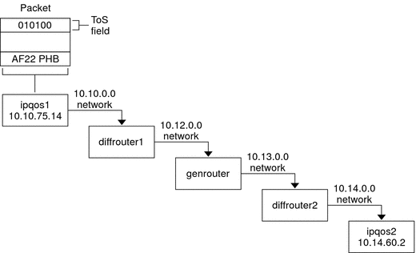

|
|||
|
1. Solaris TCPIP Protocol Suite (Overview) 2. Planning an IPv4 Addressing Scheme (Tasks 3. Planning an IPv6 Addressing Scheme (Overview) 4. Planning an IPv6 Network (Tasks) 5. Configuring TCP/IP Network Services and IPv4 Addressing (Tasks) 6. Administering Network Interfaces (Tasks) 7. Enabling IPv6 on a Network (Tasks) 8. Administering a TCP/IP Network (Tasks) 9. Troubleshooting Network Problems (Tasks) 10. TCP/IP and IPv4 in Depth (Reference) 12. About Solaris DHCP (Overview) 13. Planning for DHCP Service (Tasks) 14. Configuring the DHCP Service (Tasks) 15. Administering DHCP (Tasks) 16. Configuring and Administering DHCP Clients 17. Troubleshooting DHCP (Reference) 18. DHCP Commands and Files (Reference) 19. IP Security Architecture (Overview) 21. IP Security Architecture (Reference) 22. Internet Key Exchange (Overview) 24. Internet Key Exchange (Reference) 25. Solaris IP Filter (Overview) 28. Administering Mobile IP (Tasks) 29. Mobile IP Files and Commands (Reference) 30. Introducing IPMP (Overview) 31. Administering IPMP (Tasks) Part VI IP Quality of Service (IPQoS) 32. Introducing IPQoS (Overview) Providing Quality of Service With IPQoS Improving Network Efficiency With IPQoS 33. Planning for an IPQoS-Enabled Network (Tasks) 34. Creating the IPQoS Configuration File (Tasks) 35. Starting and Maintaining IPQoS (Tasks) 36. Using Flow Accounting and Statistics Gathering (Tasks) |
Traffic Forwarding on an IPQoS-Enabled NetworkThis section introduces the elements that are involved in forwarding packets on an IPQoS-enabled network. An IPQoS-enabled system handles any packets on the network stream with the system's IP address as the destination. The IPQoS system then applies its QoS policy to the packet to establish differentiated services. DS CodepointThe DS codepoint (DSCP) defines in the packet header the action that any Diffserv-aware system should take on a marked packet. The diffserv architecture defines a set of DS codepoints for the IPQoS-enabled system and diffserv router to use. The Diffserv architecture also defines a set of actions that are called forwarding behaviors, which correspond to the DSCPs. The IPQoS-enabled system marks the precedence bits of the DS field in the packet header with the DSCP. When a router receives a packet with a DSCP value, the router applies the forwarding behavior that is associated with that DSCP. The packet is then released onto the network. Note - The dlcosmk marker does not use the DSCP. Rather, dlcosmk marks Ethernet frame headers with a CoS value. If you plan to configure IPQoS on a network that uses VLAN devices, refer to Marker Module. Per-Hop BehaviorsIn Diffserv terminology, the forwarding behavior that is assigned to a DSCP is called the per-hop behavior (PHB). The PHB defines the forwarding precedence that a marked packet receives in relation to other traffic on the Diffserv-aware system. This precedence ultimately determines whether the IPQoS-enabled system or Diffserv router forwards or drops the marked packet. For a forwarded packet, each Diffserv router that the packet encounters en route to its destination applies the same PHB. The exception is if another Diffserv system changes the DSCP. For more information on PHBs, refer to Using the dscpmk Marker for Forwarding Packets. The goal of a PHB is to provide a specified amount of network resources to a class of traffic on the contiguous network. You can achieve this goal in the QoS policy. Define DSCPs that indicate the precedence levels for traffic classes when the traffic flows leave the IPQoS-enabled system. Precedences can range from high-precedence/low-drop probability to low-precedence/high-drop probability. For example, your QoS policy can assign to one class of traffic a DSCP that guarantees a low-drop PHB. This traffic class then receives a low-drop precedence PHB from any Diffserv-aware router, which guarantees bandwidth to packets of this class. You can add to the QoS policy other DSCPs that assign varying levels of precedence to other traffic classes. The lower-precedence packets are given bandwidth by Diffserv systems in agreement with the priorities that are indicated in the packets' DSCPs. IPQoS supports two types of forwarding behaviors, which are defined in the Diffserv architecture, expedited forwarding and assured forwarding. Expedited ForwardingThe expedited forwarding (EF) per-hop behavior assures that any traffic class with EFs related DSCP is given highest priority. Traffic with an EF DSCP is not queued. EF provides low loss, latency, and jitter. The recommended DSCP for EF is 101110. A packet that is marked with 101110 receives guaranteed low-drop precedence as the packet traverses Diffserv-aware networks en route to its destination. Use the EF DSCP when assigning priority to customers or applications with a premium SLA. Assured ForwardingThe assured forwarding (AF) per-hop behavior provides four different forwarding classes that you can assign to a packet. Every forwarding class provides three drop precedences, as shown in Table 37-2. The various AF codepoints provide the ability to assign different levels of service to customers and applications. In the QoS policy, you can prioritize traffic and services on your network when you plan the QoS policy. You can then assign different AF levels to the prioritized traffic. Packet Forwarding in a Diffserv EnvironmentThe following figure shows part of an intranet at a company with a partially Diffserv-enabled environment. In this scenario, all hosts on networks 10.10.0.0 and 10.14.0.0 are IPQoS enabled, and the local routers on both networks are Diffserv aware. However, the interim networks are not configured for Diffserv. Figure 32-2 Packet Forwarding Across Diffserv-Aware Network HopsThe next steps trace the flow of the packet that is shown in this figure. The steps begin with the progress of a packet that originates at host ipqos1. The steps then continue through several hops to host ipqos2.
|
||
|